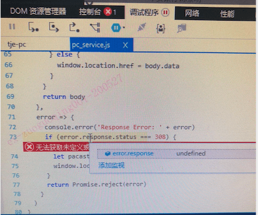

pinyin中文转拼音npm包在前端使用时的坑,IE下js错误调试方法
这篇文章发布于 2020/08/22，归类于 前端工程化
标签：
pinyin npm，前端中文转拼音，web中文转拼音
在很早之前node项目中就使用过这个npm包。这次由于Element table组件排序时，无法按照首字母排序，就引入了这个包。由于是单页面应用，import进来是没问题的，chrome里面正常。
import pinyin from "pinyin";
console.log(
pinyin("测试", {
style: pinyin.STYLE_NORMAL, // 设置拼音风格
heteronym: true
}).join("")
);
// ceshi后面在IE11里出现了一个bug，就是页面路由不能正常加载，调了好久。最开始以为是路由层级的问题，调到怀疑人生，最后发现是 pinyin 这个包的问题，他在IE下无法正常加载，偶尔报错 "函数错误"，导致整个页面执行失败，路由无法加载。所以在遇到难调试的问题时，先把error的报错全部解决再调, 已经遇到好几次这种情况了
IE下调试js错误的方法
IE下出现异常，console里是无法看到是哪个文件报错的，需要在F12里点击断点位置，选择遇到错误时停止，这样出现问题就会自动跳转到对应的位置
